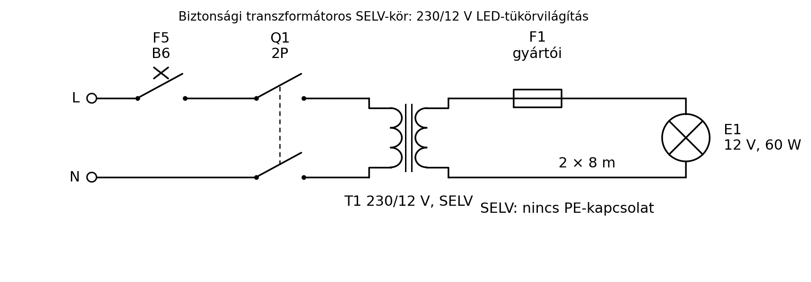

A kapcsolódó elmélet: tankönyv, 25.4 alfejezet.
Példa 1 – Autótranszformátor. Egyetlen tekercs feszültségszabályozóként működik. A teljes tekercs 230 V-ra csatlakozik, menetszáma 920. A 110 V-os leágazás hány menetes?
Adott: . Keresett: .
A feszültségáttétel:
Behelyettesítve:
Ellenőrzés: a feszültségarány , a menetszám-arány , tehát egyezik. ∎
Példa 2 – Áramváltó. Egy 100/5 A-es, 0,5 osztályú áramváltóra 5 A-es ampermérő csatlakozik. Mekkora szekunder áram folyik, ha a primer vezeték 60 A-t visz?
Adott: . Keresett: .
Ellenőrzés: 60 A a névleges primer áram 60%-a, így a szekunder áramnak is a névleges 60%-ának, azaz 3 A-nak kell lennie. A műszer skálája természetesen 100 A-re kalibrálható, így 60 A-t mutat. ∎
Példa 3 – Feszültségváltó. Egy 10 000/100 V-os feszültségváltóra 100 V-os voltmérő van kötve. A primer feszültség 10 450 V. Mennyit mutat a voltmérő?
Adott: . Keresett: .
Ellenőrzés: a primer feszültség 4,5%-kal haladja meg a névleges feszültséget, így a szekunder feszültség is 4,5%-kal nagyobb, azaz 104,5 V. A műszer skálája 10 000 V-ra kalibrálva 10 450 V-ot mutat. ∎
Példa 4 – Áramváltó kiválasztása. Egy elosztó leágazásának legnagyobb üzemi árama 85 A; az ajtóba szerelt ampermérő saját fogyasztása 1 VA, a mérővezeték 2,5 mm²-es réz, egyirányú hossza 4 m (oda-vissza 8 m), (példaadatok). A választott áramváltó névleges terhelése 5 VA.
Tanulság. Hosszú mérővezetéknél 1 A-es szekunder vagy nagyobb VA-jú áramváltó kell. Ellenőrzés: a vezeték terhelése az áram négyzetével arányos, ezért 5 A helyett 1 A-nél 25-ször kisebb. A pontossági osztályt a feladat szabja meg: elszámolási mérésre a hálózati engedélyes előírása szerinti osztály (például 0,5S vagy 0,2S), üzemi műszerhez rendszerint az 1-es osztály elég (ellenőrizendő: MSZ EN 61869-2, elosztói előírás).
Eset: Áramváltó szekunder szakadás. Egy ipari elosztóban a szerelő azt észleli, hogy az energiafogyasztás-mérő áramértéke időnként nullára esik, miközben a motorok járnak. A kapcsolószekrényben lévő áramváltó szekunder kivezetéseit megvizsgálva az egyik sorkapocs meleg, a szigetelés enyhén barna, és a kapcsolatok lazák.
Tünet: a mérő nem mutat áramot, a sorkapocs melegszik, szikrázásnyom látszik.
Hipotézis: a szekunder kör szakadt, ezért az áramváltó vasmagja telítésbe ment, nagy feszültség indukálódik, és a laza érintkezés melegszik.
Mérés és ok: a berendezést feszültségmentesítik (öt szabály). A szekunder kör folytonosságát multiméterrel ellenőrzik; a kapocs és a vezeték között szakadást találnak. A primer oldalt eközben nem szabad bontani, amíg a szekunder nincs megbízhatóan rövidrezárva vagy a berendezés le van választva.
Javítás: a szekunder kört megfelelő keresztmetszetű vezetékkel, húzónyomatékos sorkapoccsal újrakötik, az áramváltó szekunder S2 kivezetését földelik. A visszakapcsolás után a mérő újra pontos értéket mutat.
Megelőzés: az áramváltó szekunderét mindig tehermentesített, jól húzott csatlakozóval kell szerelni; a mérő levételéhez rövidzáró kapcsolót vagy rövidzárat kell alkalmazni. A szekunder áramkört időszakosan ellenőrizni kell.
Vezérlő-, csengő- és biztonsági transzformátornál ezt a táblázatot kövesd. Az ellenállás- és szigetelésmérés feszültségmentesen történik (az öt biztonsági lépés után, a vizsgált tekercs lekötésével); a feszültség alatti feszültség- és árammérés csak jogosult személy, tanulónak oktató felügyelete mellett végezhető.
| Tünet | Lehetséges ok | Mérés | Javítás |
|---|---|---|---|
| nincs szekunder feszültség | kioldott primer védelem, kiolvadt beépített hőbiztosító, primer tekercsszakadás | primer tekercsellenállás feszültségmentesen (100 VA-es, 230 V-os típusnál nagyságrendileg néhány tíz ohm; ellenőrizendő a típusnál), szakadásnál végtelen | a transzformátor cseréje; az ok (pl. túlterhelés) megkeresése |
| üresjárásban alacsony a szekunder feszültség | rossz primer kapocspár (0–400 V-os kapocs 230 V-on: 58 %) | és a bekötött kapcsok összevetése a kapocskiosztással (felügyelettel) | átkötés a megfelelő kapocspárra, feszültségmentesen |
| csak terhelve alacsony | túlterhelés vagy kevés VA | lakatfogóval , összevetése az adattáblával | a terhelés csökkentése vagy nagyobb transzformátor |
| búg, melegszik | túlterhelés, menetzárlat, laza lemezköteg | üresjárási áram összevetése egy ép, azonos példányéval; terhelőáram | menetzárlatnál csere; laza köteg esetén csere vagy a gyártó szerinti javítás |
| a primer kismegszakító bekapcsoláskor esetenként old | bekapcsolási áramlökés B jelleggörbével | a kioldás időpontja, zárlat kizárása szigetelésméréssel | C vagy K jelleggörbe, illetve lomha betét a gyártó szerint, a hibahurok-feltétel ellenőrzésével |
| a szekunder biztosító azonnal old | szekunder zárlat, vagy a 0 V–PE kötés mellett testzárlatos vezérlővezeték | szigetelésmérés a szekunder körön (a 0 V–PE kötés ideiglenes bontásával, az érzékeny elemek leválasztásával, a gyártói vizsgálófeszültséggel), utána a kötés visszaállítása | a hibás vezeték vagy készülék javítása; a biztosítót azonos értékűre cseréld |
| bizsergés SELV-kör fémrészein | földelt vagy hálózati körrel érintkező szekunder | primer–szekunder és szekunder–PE szigetelési ellenállás | azonnali leválasztás; transzformátor vagy vezetékezés cseréje |
Mért értékekből következtess. Egy 230/24 V-os, 63 VA-es transzformátor (primer kapcsai 0–230–400) szekunderén üresjárásban , a bekötött primer kapcsokon 230 V mérhető. Mi a hiba?
Megoldás. A hálózatot a 0–400 V-os kapocspárra kötötték: – ez egyezik a méréssel. Feszültségmentesítés után a vezetéket a 230-as kapocsra kell átkötni, és a szekunder feszültséget újra ellenőrizni.
A válaszokat lásd a Megoldások elején.
A mérőváltós számításokat (áttétel, primer és szekunder áram, mérőszorzó, a szekunder kör VA-terhelése) és az autotranszformátor áramait a mérőhelyi munkában és a vizsgán is gyorsan kell tudni. A generátorlap három szinten ad feladatot: A – áramváltó (x/5 és x/1 A) és feszültségváltó áttétele mindkét irányban; B – áramváltós fogyasztásmérő mérőszorzója és a valódi fogyasztás, valamint a szekunder kör terhelése (műszer + oda-vissza vezeték) és a megfelelő névleges teljesítmény; C – autotranszformátor megcsapolása, primer árama és a közös tekercsrész árama. Hibás válasznál a lap jelzi a tipikus tévedést (fordított áttétel, a szorzó elhagyása, csak egy irányban számolt vezeték, 5 A helyett 1 A, a közös rész áramának összeadása).
Old meg az alábbi nyolc feladatot; a B szintnél ne feledd: az áramváltó szekunder vezetéke oda-vissza számít, és a terhelés az áram négyzetével nő – ezért 1 A-es szekunderrel ugyanakkora vezeték 25-ödannyi terhelést jelent.
Rögzített feladatsor. Nyolc rögzített feladat (a HTML-kiadásban a lap korlátlan számú további feladatot ad).
Megoldókulcs.
| Feladat | Szint | Eredmény |
|---|---|---|
| 1. | A | I2 = 3,75 A |
| 2. | A | I1 = 252 A |
| 3. | A | U1 = 9,85 kV |
| 4. | A | I2 = 800 mA |
| 5. | B | mérőszorzó = 30; W = 2016 kWh |
| 6. | B | S = 4,57 VA; megfelelő névleges = 5 VA |
| 7. | C | N2 = 600; I1 = 2 A; Iközös = 2 A |
| 8. | C | N2 = 900; I1 = 7,04 A; Iközös = 1,96 A |
Kidolgozott megoldások.
1. feladat (A). Sorolj fel három speciális transzformátort és jellemezd a feladatukat egy-egy mondatban.
2. feladat (A). Egy autótranszformátor teljes tekercsének menetszáma 1200, primer feszültsége 230 V. Hány menetes a leágazás, ha a kimeneti feszültség 115 V?
3. feladat (B). Egy 300/5 A-es áramváltó szekunder oldalára 5 A-es mérő van kötve. Számítsd ki a szekunder áramot 75, 150 és 300 A primer áramnál. Ellenőrizd az arányosságot.
4. feladat (B). Egy feszültségváltó áttétele . A voltmérő 98,5 V-ot mutat. Mekkora a primer feszültség?
5. feladat (C). Egy hegesztőtranszformátor primer feszültsége 230 V, üresjárati szekunder feszültsége 70 V, névleges hegesztőárama 180 A. A szekunder munkafeszültség 30 V; a szekunder ív ohmosnak vehető. Becsüld meg a primer áramot névleges hegesztőáramnál, ha a primer teljesítménytényező 0,55 (kompenzálatlan, szórótranszformátoros gép), és a transzformátor hatásfoka 90%. Ellenőrizd a nagyságrendet.
6. feladat (D). Egy elosztó szekrényben áramváltó van az energiafogyasztó mérőhöz. A mérő áramot nem mutat. Írd le a hibakeresés lépéseit a feszültségmentesítéstől a javításig, figyelembe véve az áramváltó szekunder szakadásának veszélyét.
7. feladat (B). Egy leágazás üzemi árama 160 A, az ampermérő fogyasztása 3 VA, a 4 mm²-es réz mérővezeték egyirányú hossza 6 m (), a szekunder 5 A. Válassz áttételt, és döntsd el, 2,5 VA-es vagy 5 VA-es névleges terhelésű áramváltó kell-e.
1. feladat. Például: - Autótranszformátor: egy tekercs, a feszültséget leágazással változtatja, galvanikus leválasztás nélkül. - Hegesztőtranszformátor: lehajló karakterisztikával nagy hegesztőáramot ad. - Biztonsági transzformátor: legfeljebb 50 V kimenő feszültség, galvanikus leválasztással, törpefeszültségű áramkörökhöz.
2. feladat. Adott: . Képlet: . Behelyettesítés: . Ellenőrzés: a kimeneti feszültség a fele a bemenőnek, tehát a menetszám is a fele. ∎
3. feladat. Áttétel . - 75 A-nél: , - 150 A-nél: , - 300 A-nél: . Ellenőrzés: az áramok aránya megegyezik a primer áramok arányával, tehát lineáris. ∎
4. feladat. Adott: . Képlet: . Ellenőrzés: a szekunder feszültség kicsit kisebb, mint a névleges 100 V, tehát a primer is kicsit kisebb, mint a névleges 10 000 V, a kapott 9850 V helyes nagyságrendű. ∎
5. feladat. Adott: (szórótranszformátoros, kompenzálatlan hegesztőtranszformátor, ellenőrizendő: gyártói adatlap); a szekunder ív ohmos (). A szekunder hatásos teljesítmény:
A primer hatásos teljesítménye a hatásfok miatt:
A primer áram:
Ellenőrzés: 180 A hegesztőáram 30 V-nál 5,4 kW hatásos teljesítmény; a primer oldalon 230 V-nál ez kb. 47 A. A hegesztőtranszformátor nagy szórási reaktanciája miatt a primer kicsi, ezért a primer áram jóval nagyobb, mint amit a hatásos teljesítményből -gyel becsülnénk (kb. 26 A). Egy szokásos 16 A-es dugaszolóaljzat-kör erre nem elég: a hegesztőgép külön, méretezett áramkört igényel (ellenőrizendő: gyártói adat, bekapcsolási idő). ∎
6. feladat. A hibakeresés lépései: 1. Feszültségmentesítés az öt biztonsági szabály szerint: lekapcsolás, visszakapcsolás elleni biztosítás, feszültségmentesség ellenőrzése (kétpólusú feszültségvizsgálóval (MSZ EN 61243-3) minden vezetőpáron (L–L, L–PE), a vizsgáló működését előtte és utána ismert forráson ellenőrizve), földelés és rövidrezárás szükség esetén, szomszédos részek lefedése. 2. Ellenőrizni, hogy a mérő áramváltó csatlakozása biztonságos-e: a szekunder kör kivezetései megfelelően rögzítettek-e, nincs-e laza sorkapocs. 3. A szekunder kör folytonosságának mérése multiméterrel; ha szakadt, meg kell találni a szakadás helyét. 4. Ha a mérőt le kell venni, előbb a szekunder kapcsokat rövidre kell zárni egy rövidzáró kapcsolóval vagy ideiglenes rövidzárral, hogy a primer áram ne okozzon veszélyes feszültséget. 5. A szakadt vezeték javítása vagy a kapocs meghúzása, majd a rövidzár eltávolítása. 6. A visszakapcsolás után ellenőrizni, hogy a mérő ismét áramot mutat, és a csatlakozók nem melegszenek.
7. feladat. A következő szabványos primer érték 200 A → 200/5 A. ; a vezeték terhelése ; összesen . Az 5 VA-es megfelel, a 2,5 VA-es nem.
Példa: a 12 V-os LED-tükörvilágítás transzformátora. Ugyanaz a 12 V, 60 W-os fogyasztó, mint a 21.5 alfejezet (tankönyv, 21.5) 3. példájában (a transzformátor és a lámpa egyszeres távolsága 8 m, példaadat):

A szerelő kiválasztási lépései:
Mini példa (szemléltető adat): 160 VA-es, 230/24 V-os, feltételesen rövidzárásbiztos transzformátor; a gyártó előírása: „szekunder: legfeljebb 6,3 A lomha”. A névleges szekunder áram . A 10 A-es szekunder kismegszakító nem megfelelő: a névleges áram másfélszereséig vagy afelett is tartósan engedné a terhelést, a gyártó feltétele sérülne, és a tekercs a kioldás előtt túlmelegedhet. A 6,3 A-es lomha betét teljesíti az előírást.
A vezérlőtranszformátor teljes védelmi bekötését a 25.1 alfejezet (tankönyv, 25.1) rajza mutatja; a szekunder zárlati áram becslését () ugyanott találod.